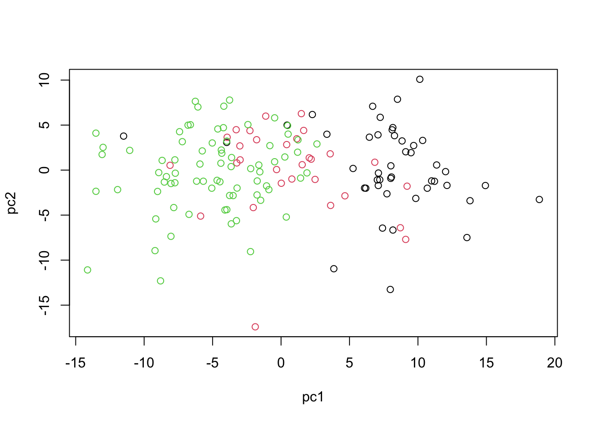
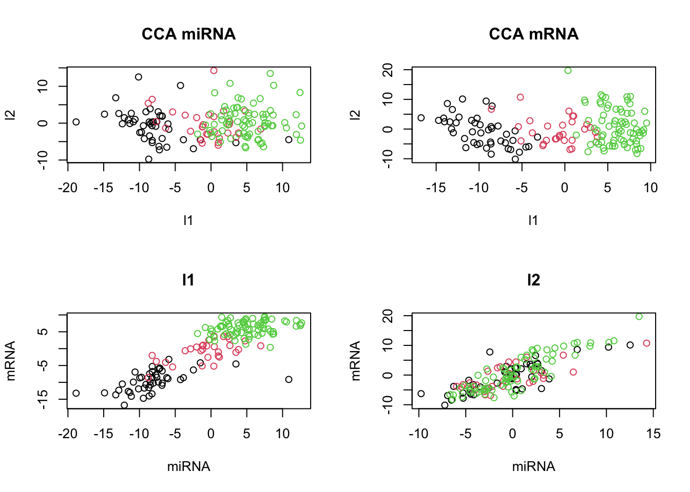
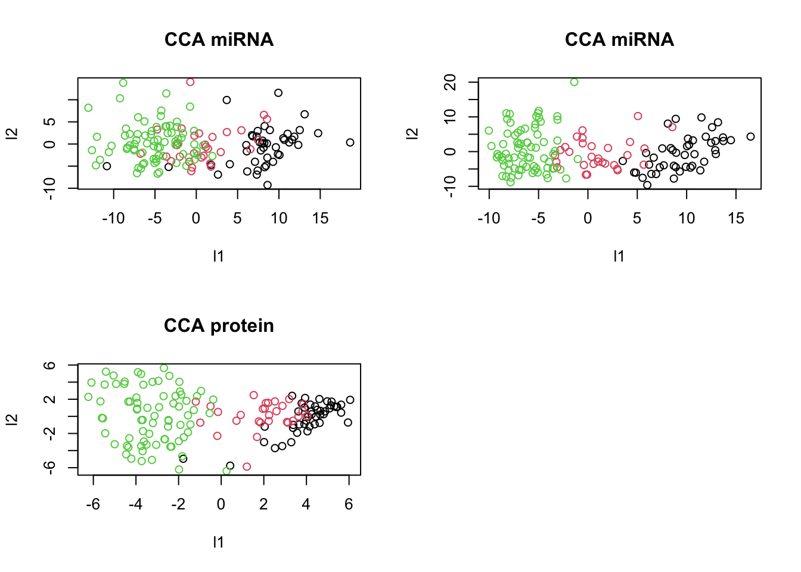
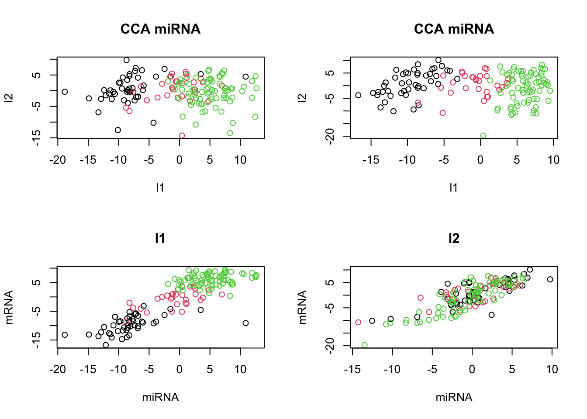
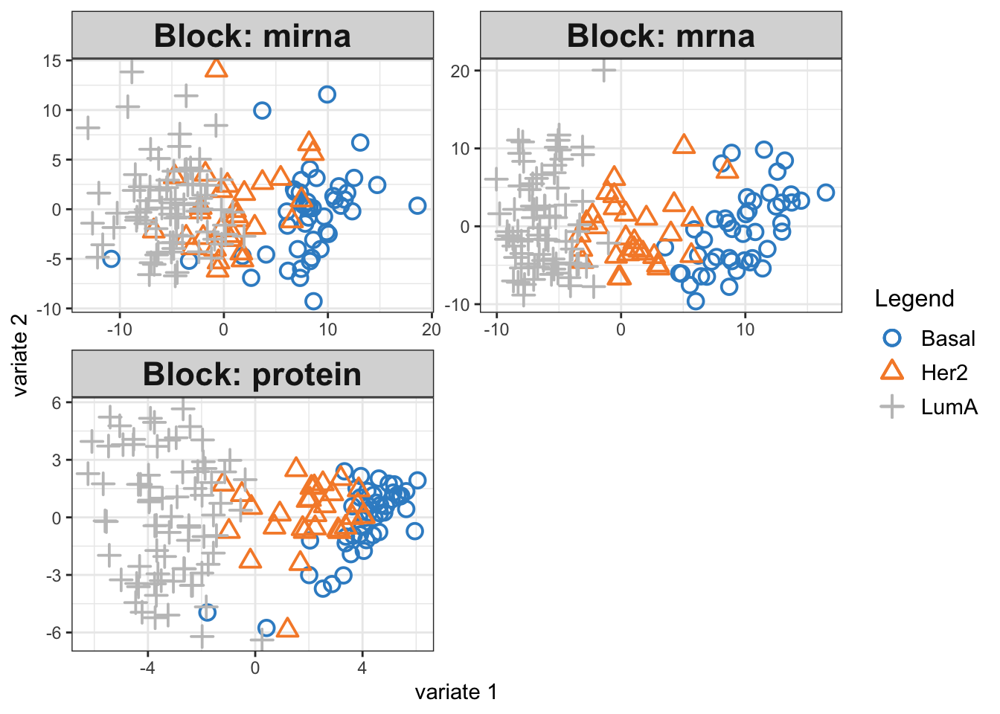
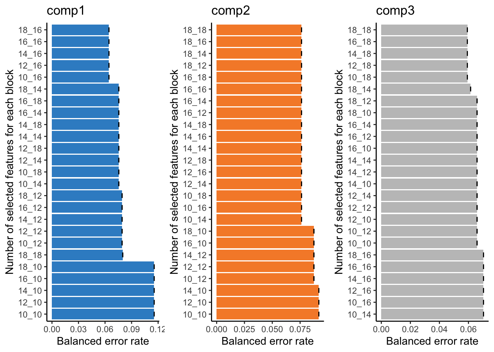
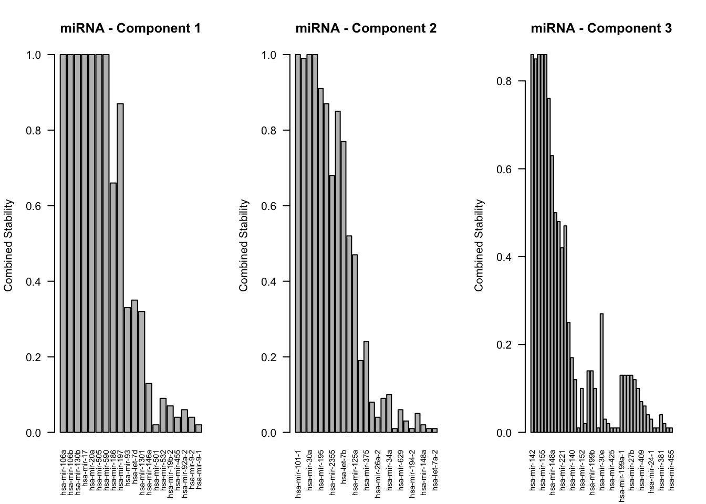
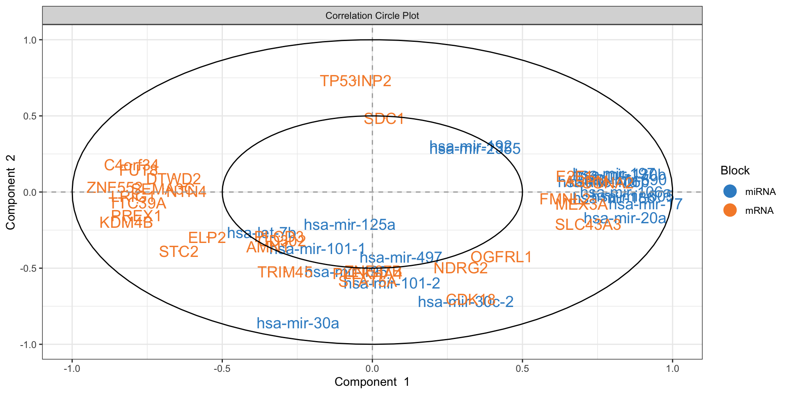
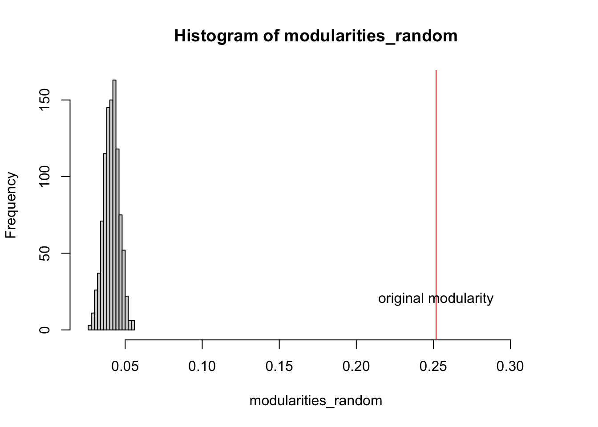

# list of packages to be installed
packages <- c("mixOmics")
# check and install missing packages
new_packages <- packages[!(packages %in% installed.packages()[,"Package"])]
if(length(new_packages)) install.packages(new_packages, dependencies = TRUE, type = "binary")
# load the libraries
library(mixOmics)Set up the environment
Introduction
In classical data integration, we would like to use information across different modalities (e.g. transcriptome, proteome and metabolome) to gain more comprehensive insights into the biological systems under study. This type of data can be used for an array of different purposes including but not limited to molecular classification, stratification of patients, outcome predictions and understanding of regulatory processes such as gene regulation and pathway analysis.
Here we are going to learn about matrix decomposition and how it can be used to integrate multimodal data. Matrix decomposition provides us with simple yet powerful tool to explore our data and extract meaningful information from it. Matrix decomposition techniques, such as Singular Value Decomposition (SVD) allow us to break down a complex matrix into simpler, more manageable components. These components can then be analyzed to uncover underlying patterns, trends, and structures within the data. We are going to revisit PCA and look at generalized canonical correlation analysis (GCCA) including partial least squares discriminant analysis (PLS-DA) and its multiomics expansion.
PCA
Principal Component Analysis, PCA, is a special case of SVD in which basis vectors, or principal components, are the eigenvectors of the data’s covariance matrix. These principal components are orthogonal and represent the directions of maximum variance in the data. If you want to know more about PCA look at here.
PCA might sound complex at first, but it can be understood intuitively as a method for simplifying and summarizing complex, multidimensional data.
Imagine a data set containing the expression levels of thousands of genes from a group of individuals. Each individual is represented by a complex data sample characterized by the expression levels of all these genes. Visualizing or analyzing such high-dimensional data can be very difficult.
PCA simplifies this complex, multidimensional space by identifying the “principal components” of the data, which are new axes that capture the most significant patterns in the data. These axes are combinations of the original gene expression levels that explain the maximum variance in the dataset.
For example, the first principal component (PC) might represent a combination of genes that change the most across all individuals. It could capture a general trend in gene expression that separates individuals based on age or response to a treatment. The second PC, orthogonal to the first, might capture the next highest variance, showing another layer of structure in the data, and so on.
Formally, PCA is derived from the right singular vectors contained in matrix \(V\). The singular values in \(\Sigma\) are related to the eigenvalues of the covariance matrix of the original data, and they indicate the amount of variance captured by each principal component.
In simpler terms, when we perform SVD on a data matrix \(A\), the columns of \(V\) (the right singular vectors) are actually the principal components of \(A\). The singular values in \(\Sigma\) tell us the importance or weight of these principal components.
The SVD of a matrix \(A \in \mathbb{R}^{m \times n}\) is expressed as: \[ A = U \Sigma V^T \] where
- \(U \in \mathbb{R}^{m \times m}\) is the left singular matrix,
- \(\Sigma \in \mathbb{R}^{m \times n}\) is the diagonal matrix containing the singular values, and
- \(V \in \mathbb{R}^{n \times n}\) is the right singular matrix.
To see this connection clearly, let’s consider the covariance matrix of \(A\), denoted as \(C\): \[ C = \frac{1}{n-1} A^T A\]
When we perform eigen decomposition on \(C\), we get: \[ C = W \Lambda W^T \] where \(W\) contains the eigenvectors and \(\Lambda\) is a diagonal matrix containing the eigenvalues.
Now, if we look at the SVD of \(A\) again: \[ A = U \Sigma V^T \] and compute \(A^T A\), we get: \[ A^T A = V \Sigma^T U^T U \Sigma V^T = V \Sigma^2 V^T\]
Comparing this with the eigen decomposition of \(C\), we observe that the right singular vectors \(V\) are the eigenvectors of \(C\), and the singular values squared in \(\Sigma^2\) are the eigenvalues in \(\Lambda\).
There are other algorithms for doing PCA for example using power methods but almost all of them will converge to the same solution with a certain numerical accuracy.
Data
Our data has to be in a data.frame where features are in the columns and samples in the rows. For now we are going to use TCGA dataset from mixOmics.
This data set is a small subset of the full data set from The Cancer Genome Atlas that can be analysed with the DIABLO framework. It contains the expression or abundance of three matching omics data sets: mRNA, miRNA and proteomics for 150 breast cancer samples (with three molecular subtypes of breast cancer: Basal, Her2, Luminal A) in the training set, and 70 samples in the test set. The test set is missing the proteomics data set.
# download the dataset
download.file("https://github.com/mixOmicsTeam/mixOmics/raw/master/data/breast.TCGA.rda", destfile = "TCGA.rda")
# load the data
load("TCGA.rda")This data has already been split into a list with two elements: training and testing. The first element (training) contains four elements, again lists, containing miRNA, mRNA, proteomics and cancer molecular subtypes. The second element (testing) contains three lists holding miRNA, mRNA and molecular subtypes data (proteomics data are missing here).
# preview data
str(breast.TCGA)List of 2
$ data.train:List of 4
..$ mirna : num [1:150, 1:184] 11.8 12.9 12.3 12 13.4 ...
.. ..- attr(*, "dimnames")=List of 2
.. .. ..$ : chr [1:150] "A0FJ" "A13E" "A0G0" "A0SX" ...
.. .. ..$ : chr [1:184] "hsa-let-7a-1" "hsa-let-7a-2" "hsa-let-7a-3" "hsa-let-7b" ...
..$ mrna : num [1:150, 1:200] 4.36 1.98 1.73 4.36 2.45 ...
.. ..- attr(*, "dimnames")=List of 2
.. .. ..$ : chr [1:150] "A0FJ" "A13E" "A0G0" "A0SX" ...
.. .. ..$ : chr [1:200] "RTN2" "NDRG2" "CCDC113" "FAM63A" ...
..$ protein: num [1:150, 1:142] 0.0491 -0.08 -0.0328 -0.2053 0.0602 ...
.. ..- attr(*, "dimnames")=List of 2
.. .. ..$ : chr [1:150] "A0FJ" "A13E" "A0G0" "A0SX" ...
.. .. ..$ : chr [1:142] "14-3-3_epsilon" "4E-BP1" "4E-BP1_pS65" "4E-BP1_pT37" ...
..$ subtype: Factor w/ 3 levels "Basal","Her2",..: 1 1 1 1 1 1 1 1 1 1 ...
$ data.test :List of 3
..$ mirna : num [1:70, 1:184] 12.8 13.9 12.9 12.4 13.1 ...
.. ..- attr(*, "dimnames")=List of 2
.. .. ..$ : chr [1:70] "A54N" "A2NL" "A6VY" "A3XT" ...
.. .. ..$ : chr [1:184] "hsa-let-7a-1" "hsa-let-7a-2" "hsa-let-7a-3" "hsa-let-7b" ...
..$ mrna : num [1:70, 1:200] 1.19 2.73 3.05 2.7 3.14 ...
.. ..- attr(*, "dimnames")=List of 2
.. .. ..$ : chr [1:70] "A54N" "A2NL" "A6VY" "A3XT" ...
.. .. ..$ : chr [1:200] "RTN2" "NDRG2" "CCDC113" "FAM63A" ...
..$ subtype: Factor w/ 3 levels "Basal","Her2",..: 1 1 1 1 1 1 1 1 1 1 ...PCA in R
To run PCA in R using SVD we center our data and use the svd function.
# center the data
data_centered_mirna <- scale(breast.TCGA$data.train$mirna,center = TRUE,scale = FALSE)
# do SVD
svd_mirna <- svd(data_centered_mirna)
# calculate the PC scores
calculated_scores <- data_centered_mirna%*%svd_mirna$v
# plot the PC scores
plot(calculated_scores[,1:2],xlab="PC1",ylab="PC2",col=breast.TCGA$data.train$subtype)
This gives us identical results as the ones obtained via using standard prcomp function.
# do PCA using prcomp
pca_prcomp <- prcomp(data_centered_mirna)
# plot the PCA
plot(pca_prcomp$x[,1:2], xlab="PC1", ylab="PC2", col=breast.TCGA$data.train$subtype)
PCA with mixOmics
In practice there are more specialized packages that can be used to do PCA. mixOmics implements a very powerful PCA method that provide us not only with standard PCA but also with extra advantages such as handling of missing value, plotting and taking into account repeated measurements.
# do PCA using mixOmics
pca_mixomics <- mixOmics::pca(data_centered_mirna, ncomp = 2)
# plot the PCA
mixOmics::plotIndiv(pca_mixomics,
group=breast.TCGA$data.train$subtype,
ind.names = F,
legend = T,
title = "miRNA PCA")
In the function above, we have performed a PCA with two components on miRNA data. The first principal component (PC1) captures 23% of the total variance, while the second principal component (PC2) accounts for an additional 9%. This means that together, PC1 and PC2 provide a simplified representation that encapsulates 32% of the total variability in the miRNA data.
Examining the PCA plot, we can notice distinct patterns. The Basal cancer subtype is clustered on the right side of the plot, indicating an unique miRNA expression profile that is markedly different from the other subtypes. In contrast, the HER2 and LumA subtypes are more centered and somewhat intermingled towards the left, suggesting overlapping or similar patterns of miRNA expression. Most of the differences are represented in the PC1, so it is probably our most important factor to focus on!
This observed separation and overlap in the PCA plot is not just a graphical representation but is rooted in the underlying biology of these cancer subtypes. The positioning of the different groups on the PCA plot is influenced by the expression levels of various miRNAs, each contributing differently to the principal components.
Now, as we go deeper into understanding the PCA plot, it becomes essential to explore the concept of loadings. Loadings help us to interpret the contribution of each miRNA to the principal components. They provide insights into which specific miRNAs are driving the separation between different cancer subtypes observed on the PCA plot.
We can go ahead and plot the loadings. We start with our most important PC, that is PC1
# loadings for component 1
mixOmics::plotLoadings(pca_mixomics,comp = 1)
In this bar plot, each bar represents a specific miRNA. The length of the bar corresponds to the value of the loading of that miRNA on PC1, indicating its contribution to this principal component. The miRNAs with the highest absolute contributions are at the bottom, and those with the lowest are at the top, making it easy to identify the most influential miRNAs. Both the length and direction of each bar provide crucial insights into the miRNA’s contribution to the first principal component (PC1). The length of the bar signifies the magnitude of the miRNA’s contribution. Longer bars indicate miRNAs that have a more substantial influence on the variance captured by PC1, highlighting them as key elements in distinguishing different patterns of gene expression within the dataset.
The direction of the bar adds another layer of interpretation. Bars extending to the right represent miRNAs that are positively correlated with PC1, indicating that as the values of these miRNAs increase, so does the score of PC1. Conversely, bars extending to the left suggest a negative correlation, meaning as the values of these miRNAs increase, the score of PC1 decreases. This directional information can be important in understanding the expression patterns of miRNAs in different breast cancer subtypes. For instance, miRNAs that are positively correlated with PC1 might be highly expressed in the Basal subtype but low in others, offering insights into the molecular distinctions between these cancer subtypes.
Limitations with more data sets
Score plot together with loading give us powerful tool to investigate patterns in a single data set. But how about if we have multiple data sets? Can we simply go ahead and merge multiple data sets into one and do PCA on this merged data?
While it might be tempting to merge multiple data sets into one and proceed with PCA, this approach has several challenges and limitations. Different data sets can have variations in terms of units, scales, and data collection methods. Simply merging them without addressing these issues can lead to misleading PCA results, where the observed variance is more a reflection of the data sets’ inconsistencies rather than underlying biological patterns. In addition, when data sets are collected at different times, locations, or under different conditions, batch effects can occur. These systematic non-biological differences can confound the PCA results, making it difficult to detect true patterns and relationships within the data. This leads us to multi-omics analysis, where techniques like Canonical Correlation Analysis (CCA) offer ways to detect correlated patterns between two or more omics data sets, and provide a more holistic view of the underlying biological processes.
CCA (two data sets)
Canonical Correlation Analysis, CCA, is similar to PCA with the capability to analyze multivariate correlations between two data sets. While PCA focuses on maximizing variance within a single dataset, CCA identifies linear combinations of variables from two data sets that are maximally correlated. It provides pairs of canonical variables and their associated canonical correlations, giving insights into the shared structure and relationships between the data sets. This is particularly suited in multi-omics studies, where understanding the interplay between different types of biological data is crucial.
Mathematical Foundations
CCA seeks to find pairs of linear combinations, one from each dataset, that are maximally correlated. If we have two data sets \(X\) and \(Y\), the canonical correlations are obtained by solving the optimization problem:
\[ \max_{a, b} \rho = \text{corr}(a^T X, b^T Y) \]
where \(a\) and \(b\) are the canonical weights, and \(\rho\) is the canonical correlation.
The cross-covariance matrix between \(X\) and \(Y\) plays a central role in calculating CCA weights. We compute it and then apply SVD to find the weights and correlations. The process is similar to performing SVD in PCA but extends to exploring relationships between two data sets. \[ \text{SVD}(\Sigma_{XY}) = U \Lambda V^T \]
where \(\Sigma_{XY}\) is the cross-covariance matrix, \(U\) and \(V\) are the canonical weights for \(X\) and \(Y\), and \(\Lambda\) contains the canonical correlations.
We can now find the canonical variables: \[ T_x = XU \] \[ T_y = YV\]
After finding the first pair, we use a deflation process to remove their effect and proceed to find the next pair. This iterative process continues until we extract the desired number of canonical variable pairs.
\[ X = X-T_x(X^TT_U(T^T_UT_U)^{-1})^T \] and for \(Y\)
\[Y = Y-T_y(Y^TT_U(T^T_UT_U)^{-1})^T \] The process is repeated to extract additional pairs of canonical variables.
CCA in R
Let’s have a look at how we can derive this in R using miRNA and mRNA data
# center both of the data sets
X_centered <- scale(breast.TCGA$data.train$mirna, scale = FALSE)
Y_centered <- scale(breast.TCGA$data.train$mrna, scale = FALSE)
# calculate cross-covariance matrix
cross_cov <- t(X_centered)%*%Y_centered
# do a svd (single eigenvector) this is going to give us a single CCA component
svd_result <- svd(cross_cov,1,1)
# extract the vectors
U <- svd_result$u
V <- svd_result$v
# calculate the first canonical vectors (the most correlated latent factors)
canonical_vars_X <- X_centered %*% U
canonical_vars_Y <- Y_centered %*% V
# deflate the original matrices
X_centered <- X_centered - canonical_vars_X %*% t((t(X_centered)%*%(canonical_vars_X)%*%solve(t(canonical_vars_X)%*%(canonical_vars_X))))
Y_centered <- Y_centered - canonical_vars_Y %*%
t(t(Y_centered)%*%(canonical_vars_Y)%*%solve(t(canonical_vars_Y)%*%(canonical_vars_Y)))
# redo the SVD for the second component
cross_cov <- t(X_centered)%*%Y_centered
svd_result <- svd(cross_cov,1,1)
U <- svd_result$u
V <- svd_result$v
# calculate the second canonical vectors (the second most correlated latent factors)
canonical_vars_X2 <- X_centered %*% U
canonical_vars_Y2 <- Y_centered %*% V
# plot
graph_scale <- 1.5
par(mfrow=c(2,2))
plot(canonical_vars_X, canonical_vars_X2, col=breast.TCGA$data.train$subtype,
xlab="l1", ylab="l2", main="CCA miRNA",
cex = graph_scale, cex.lab = graph_scale, cex.axis = graph_scale)
plot(canonical_vars_Y, canonical_vars_Y2, col=breast.TCGA$data.train$subtype,
xlab="l1", ylab="l2", main="CCA mRNA",
cex = graph_scale, cex.lab = graph_scale, cex.axis = graph_scale)
plot(canonical_vars_X, canonical_vars_Y, col=breast.TCGA$data.train$subtype,
xlab="miRNA", ylab="mRNA", main="l1",
cex = graph_scale, cex.lab = graph_scale, cex.axis = graph_scale)
plot(canonical_vars_X2, canonical_vars_Y2, col=breast.TCGA$data.train$subtype,
xlab="miRNA", ylab="mRNA", main="l2",
cex = graph_scale, cex.lab = graph_scale, cex.axis = graph_scale)
The plot above clearly shows that we ended up having a shared pattern in l1 (first CCA component). L1 captures the primary mode of correlation between miRNA and mRNA expression data. It represents the linear combinations of miRNAs and mRNAs that are most strongly correlated. Since our interest right now is in the suptypes, we can probably ignore the second latent factor but we might as well try to explain if based on some other factors.
We are going to explore the loadings later when we explain multiomics CCA i.e. GCCA but for now remember that in the context of CCA, loadings play a role similar to that in PCA, yet they have a distinct interpretation. Similar to PCA, where loadings indicate the contribution of each original variable to the principal components, in CCA, the loadings show the contribution of each variable to the canonical variables. However, the difference lies in their meaning. While PCA loadings represent the contribution to the variance within a single data set, CCA loadings show the contribution to the correlation between two datasets.
So far we have been going through CCA using two data sets. Can it be expaned to more data sets? Yes, via Generalized Canonical Correlation Analysis.
Generalized Canonical Correlation Analysis
Generalized Canonical Correlation Analysis (GCCA) is an extention of CCA to multiple data sets. We are going to introduce a few more concepts before running GCCA in R.
We talked about SVD for PCA and CCA. While SVD provides a direct and efficient means to compute canonical correlations and vectors, there are alternative numerical approaches, such as the power method, which can be particularly useful for iterative computations, giving us a lot of flexibility in terms of applying modifications to the method.
Power Method (generic)
The power method is a classic numerical algorithm used to approximate the eigenvalue and the corresponding eigenvector of a matrix. It is used for large, sparse matrices.
Initial Steps:
Initialization: Start with a random vector \(b_0\), which doesn’t have to be the eigenvector. Normalize this vector.
Iteration: Multiply \(b_0\) by the matrix \(A\), where \(A\) is the matrix whose dominant eigenvalue and eigenvector we want to find.
Iterative Formula:
The iterative formula for the power method is given by
\[ b_{k+1} = \frac{Ab_k}{\|Ab_k\|} \]
where - \(A\) is the matrix under consideration, - \(b_k\) is the approximation of the dominant eigenvector at the \(k\)th step, - \(\|Ab_k\|\) is the norm of the vector \(Ab_k\), ensuring that \(b_{k+1}\) is normalized.
Convergence:
The method converges when
\[ \|b_{k+1} - b_k\| < \epsilon \]
where \(\epsilon\) is a small, pre-defined threshold indicating the level of accuracy desired.
Power method & CCA (two data sets)
Going back to CCA, the power method can be used to find the canonical correlations and vectors based on random vector or even better, the PC scores coming from SVD.
Steps in the CCA context:
- Calculate Initial Loadings:
- Compute the initial loadings \(u_0\) and \(v_0\) for data sets \(X\) and \(Y\) respectively, this can be done randomly!
- Compute the initial scores \(s_{X,0} = Xu_0\) and \(s_{Y,0} = Yv_0\).
- Iteratively Update Loadings and Scores:
- For each dataset, update the loadings based on the regression on the scores of the other dataset: \[ u_{k+1} = X^T s_{Y,k}, \quad v_{k+1} = Y^T s_{X,k}. \]
- Normalize the updated loadings: \[ u_{k+1} = \frac{u_{k+1}}{\|u_{k+1}\|}, \quad v_{k+1} = \frac{v_{k+1}}{\|v_{k+1}\|}. \]
- Update the scores: \[ s_{X,k+1} = Xu_{k+1}, \quad s_{Y,k+1} = Yv_{k+1}. \]
- Check for Convergence:
- Compute the change in loadings: \[ \epsilon_u = \|u_{k+1} - u_k\|, \quad \epsilon_v = \|v_{k+1} - v_k\|. \]
- If \(max(\epsilon_u,\epsilon_v) < \epsilon\), where \(\epsilon\) is a small positive threshold, the algorithm has converged.
- Deflation:
- After obtaining each pair of canonical variables, deflate the datasets to extract additional canonical variables: \[ X = X - s_{X,k+1} \left( \frac{X^T s_{X,k+1}}{s_{X,k+1}^T s_{X,k+1}} \right)^T, \] \[ Y = Y - s_{Y,k+1} \left( \frac{Y^T s_{Y,k+1}}{s_{Y,k+1}^T s_{Y,k+1}} \right)^T. \]
The loadings are updated by projecting each dataset onto the scores of the other dataset, capturing the shared information and maximizing the correlation between the datasets. The convergence criterion ensures that the iterative process stops when the loadings become stable, indicating that the canonical variables that maximize the correlation between the datasets have been found. The deflation step is similar to that of SVD.
Implementation in R
# center the data
X_centered <- scale(breast.TCGA$data.train$mirna, scale = FALSE)
Y_centered <- scale(breast.TCGA$data.train$mrna, scale = FALSE)
# add them to a list for easier access
data_merged<-list(mirna=X_centered,mrna=Y_centered)
# define the number of components
number_of_components <- 2
scores_list<-list()
for(cmp in 1:number_of_components)
{
# initialize the loadings based on random data
initial_loadings <- lapply(data_merged,function(x){runif(ncol(x))})
# define an empty loading for new ones
new_loadings<-initial_loadings
new_loadings[]<-NA
# calculate the PC scores
pc_scores <- mapply(function(x,y){x%*%y},x=data_merged,y=initial_loadings)
repeat{
# dataset index
data_index<-1:length(data_merged)
# for each dataset
for(i in 1:length(data_merged))
{
# reestimate the loadings based on the regreesion on the scores of the other dataset
new_loadings[[i]] <- crossprod(data_merged[[i]],
pc_scores[,data_index!=i])
# normalize the loadings
new_loadings[[i]] = new_loadings[[i]]/drop(sqrt(crossprod(new_loadings[[i]])))
# update the scores
pc_scores[, i] = data_merged[[i]] %*% new_loadings[[i]]
}
scores_list[[cmp]]<-pc_scores
# calculate epsilone
epi <- max(sapply(1:length(data_merged), function(x) {
crossprod(new_loadings[[x]] - initial_loadings[[x]])
}))
if(epi<.Machine$double.eps)
break
# update the old loadings
initial_loadings = new_loadings
}
# perform deflation
data_merged<-lapply(1:length(data_merged),function(x){
x_tmp <- data_merged[[x]]
x_tmp - pc_scores[,x,drop=F] %*% t((t(x_tmp)%*%(pc_scores[,x,drop=F])%*%solve(t(pc_scores[,x,drop=F])%*%(pc_scores[,x,drop=F]))))
})
}
# plot
par(mfrow=c(2,2))
plot(scores_list[[1]][,1],scores_list[[2]][,1],
col=breast.TCGA$data.train$subtype,
xlab="l1",ylab="l2",main="CCA miRNA",
cex = graph_scale, cex.lab = graph_scale, cex.axis = graph_scale)
plot(scores_list[[1]][,2],scores_list[[2]][,2],
col=breast.TCGA$data.train$subtype,
xlab="l1",ylab="l2",main="CCA mRNA",
cex = graph_scale, cex.lab = graph_scale, cex.axis = graph_scale)
plot(scores_list[[1]][,1],scores_list[[1]][,2],col=breast.TCGA$data.train$subtype,
xlab="miRNA",ylab="mRNA",main="l1",
cex = graph_scale, cex.lab = graph_scale, cex.axis = graph_scale)
plot(scores_list[[2]][,1],scores_list[[2]][,2],col=breast.TCGA$data.train$subtype,
xlab="miRNA",ylab="mRNA",main="l2",
cex = graph_scale, cex.lab = graph_scale, cex.axis = graph_scale)
Now that we see that we can obtain similar results (remember the direction of axis is not important), we can try to expand the power method for multiple omics.
Power method and GCCA (multiple data sets)
Method
In the previous algorithm we had only two data sets. In the updating step we perform a simple regression of dataset \(X\) and the scores of dataset \(Y\) and vice versa.
\[u_{k+1} = X^T s_{Y,k}, \quad v_{k+1} = Y^T s_{X,k}.\] A simple solution to address the integration using multiple data sets is to estimate the loading based the regression on the joint scores. This means that given dataset \(X\), \(Y\) and \(Z\), for calculate for scores, we are going to take one of the data sets and regress it against the weighted sum of scores from the two other data set. So we are going to do:
\[s_X = X^T (w_Y \cdot s_Y + w_Z \cdot s_Z),\]
where \(w_Y\) and \(w_Z\) are the weights assigned to the scores of \(Y\) and \(Z\) respectively.
Similarly, for dataset \(Y\): \[ s_Y = Y^T (w_X \cdot s_X + w_Z \cdot s_Z), \] and for dataset \(Z\): \[ s_Z = Z^T (w_X \cdot s_X + w_Y \cdot s_Y).\]
So given this simple update we can now perform CCA on multiple datasets.
Implementation in R
Let’s try to implement this in R just using weight of 1. To make things faster, instead of random assignment of loadings, we start with SVD.
# center the data
X_centered <- scale(breast.TCGA$data.train$mirna, scale = FALSE)
Y_centered <- scale(breast.TCGA$data.train$mrna, scale = FALSE)
Z_centered <- scale(breast.TCGA$data.train$protein, scale = FALSE)
# add them to a list for easier access
data_merged<-list(mirna=X_centered,mrna=Y_centered,protein=Z_centered)
# define the number of components
number_of_components <- 2
scores_list<-list()
for(cmp in 1:number_of_components)
{
# initialize the loadings based on SVD
initial_loadings <- lapply(data_merged,function(x){svd(x,1,1)$v})
# define an empty loading for new ones
new_loadings<-initial_loadings
new_loadings[]<-NA
# calculate the PC scores
pc_scores <- mapply(function(x,y){x%*%y},x=data_merged,y=initial_loadings)
repeat{
# dataset index
data_index<-1:length(data_merged)
# for each dataset
for(i in 1:length(data_merged))
{
# reestimate the loadings based on the regreesion on the scores of the other dataset
new_loadings[[i]] <- crossprod(data_merged[[i]],
rowSums(pc_scores[,data_index!=i])) ## row sum will calculate the sum of all the scores for each datapoint across different datasets
# normalize the loadings
new_loadings[[i]] = new_loadings[[i]]/drop(sqrt(crossprod(new_loadings[[i]])))
# update the scores
pc_scores[, i] = data_merged[[i]] %*% new_loadings[[i]]
}
scores_list[[cmp]]<-pc_scores
# calculate epsilone
epi <- max(sapply(1:length(data_merged), function(x) {
crossprod(new_loadings[[x]] - initial_loadings[[x]])
}))
if(epi<.Machine$double.eps)
break
# update the old loadings
initial_loadings = new_loadings
}
# perform deflation
data_merged<-lapply(1:length(data_merged),function(x){
x_tmp <- data_merged[[x]]
x_tmp - pc_scores[,x,drop=F] %*% t((t(x_tmp)%*%(pc_scores[,x,drop=F])%*%solve(t(pc_scores[,x,drop=F])%*%(pc_scores[,x,drop=F]))))
})
}
# plot
par(mfrow=c(2,2))
plot(scores_list[[1]][,1],scores_list[[2]][,1],
col=breast.TCGA$data.train$subtype,
xlab="l1",ylab="l2",main="CCA miRNA",
cex = graph_scale, cex.lab = graph_scale, cex.axis = graph_scale)
plot(scores_list[[1]][,2],scores_list[[2]][,2],
col=breast.TCGA$data.train$subtype,
xlab="l1",ylab="l2",main="CCA mRNA",
cex = graph_scale, cex.lab = graph_scale, cex.axis = graph_scale)
plot(scores_list[[1]][,3],scores_list[[2]][,3],
col=breast.TCGA$data.train$subtype,
xlab="l1",ylab="l2",main="CCA protein",
cex = graph_scale, cex.lab = graph_scale, cex.axis = graph_scale)
Congratulation! We now have fully functional GCCA for data integration. We can do clustering, regression etc. on the latent variables or go ahead and interpret the loadings.
GCCA with mixOmics
In reality one does not have to implement the whole algorithm. mixOmics package provides us with a very good interface to do GCCA with a lot of flexibility. The main function is wrapper.sgcca() and we are now going to have a look some its main functionality.
# center the data
X_centered <- scale(breast.TCGA$data.train$mirna, scale = FALSE)
Y_centered <- scale(breast.TCGA$data.train$mrna, scale = FALSE)
Z_centered <- scale(breast.TCGA$data.train$protein, scale = FALSE)
# create a list with data for easier access
data_merged <- list(mirna=X_centered, mrna=Y_centered, protein=Z_centered)
# perform a simple GCCA
gcc_three_datasets <- mixOmics::wrapper.sgcca(data_merged, ncomp = 2, scale = FALSE)
# plot
mixOmics::plotIndiv(gcc_three_datasets, group = breast.TCGA$data.train$subtype,
ind.names = FALSE, legend = TRUE, legend.position = "top")
So here comes the similar score plot of GCCA. We can clearly see the shared latent factors discovered by GCCA, separating our three groups. We can investigate loadings to know more about what variables has more influence on these latent components.
# plot top 20 loadings
mixOmics::plotLoadings(gcc_three_datasets, comp = 1, ndisplay = 20, size.title = 1) 
Here, instead of having a single loading plot we have three, one for each omics. The interpretation is the same as previously for the PCA loadings. The higher the absolute value the more influence a particular variable has on the latent scores.
There are options provided by the wrapper.scgcca() function. We are going to focus on the most important ones, namely design and keepX.
design
As we previously demonstrated, we can weight the scores from different omics before combining them. The design parameter gives us a powerful way of choosing which data view to focus on more and define the relation between the data.
Think of design as a grid where each cell’s value, ranging from 0 to 1, indicates the strength of the relationship between two corresponding data blocks. A value of 0 means no relationship, while 1 signifies a strong connection. When you are setting up your analysis, adjusting these values can help you emphasize or de-emphasize certain relationships, giving you the flexibility to focus on interactions that are of interest.
For instance, if you are curious about how two particular blocks of data interact, you’d set their corresponding value in the design matrix closer to 1. This tells sGCCA, “Hey, pay extra attention here!” Conversely, if you believe two other blocks are not significantly related, setting their value closer to 0 directs the analysis to not invest much energy in exploring that connection.
In our previous example, we chose not to provide a design matrix, in this case, mixOmics will construct a design matrix in all data sets have strongest connect (1) to each other.
# show design matrix constructed by default by mixOmics
rownames(gcc_three_datasets$design) <- colnames(gcc_three_datasets$design) <- names(data_merged)
print(gcc_three_datasets$design) mirna mrna protein
mirna 0 1 1
mrna 1 0 1
protein 1 1 0keepX
keepX is used in refining GCCA analysis by controlling number of variables to retain in each block of data during the analysis. keepX is like a filter that helps you keep only the most valuable variables, enhancing the clarity and focus of your analysis. You provide a vector of integers to keepX, each integer corresponding to the number of variables you want to retain from each data block. It is a balancing act - retaining more variables can capture complex patterns but might also introduce noise. On the other hand, keeping fewer variables simplifies the model but might miss out on nuanced interactions. Adjusting keepX is a practical step in iterative model refinement, ensuring that your analysis is both robust and focused, honing in on the most informative variables to answer your specific research questions.
Exercise 1 (Design and keepX)
Can you construct a design matrix to specify relationships between mRNA, miRNA and protein data set? Set the relationship between mRNA and protein to 0.9, between mRNA and miRNA to 0.8 and between protein and miRNA to 0.7.
Retain only 10 variables for each omics.
Run the GCCA and plot the data and loadings.
Compare the results to previous GCCA analysis. Any differences?
Show the code
# define design matrix
# show design matrix constructed by default by mixOmics
design <- matrix(data = c(0, 0.8, 0.7, 0.8, 0, 0.9, 0.7, 0.9, 0), nrow = 3, byrow = TRUE)
rownames(design) <- colnames(design) <- names(data_merged)
# perform GCCA
gcc_three_datasets <- mixOmics::wrapper.sgcca(data_merged, ncomp = 2, scale = FALSE,
design = design,
keepX = list(mirna = 10, mrna = 10, protein = 10))
# plot
mixOmics::plotIndiv(gcc_three_datasets, group = breast.TCGA$data.train$subtype,
ind.names = FALSE, legend = TRUE, legend.position = "top")
# plot top 10 loadings
mixOmics::plotLoadings(gcc_three_datasets, comp = 1, ndisplay = 10, size.title = 1) For us, it is time to switch to supervised data integration using mixOmics.
Supervised integration
So far we have been dealing with unsupervised data integration. Although we mentioned that we have done regression when explaining GCCA we did not use regression for the purpose of predicting an outcome but rather just to connect different blocks of the data together through a shared subspace (latent factors).
Partial Least Squares
We are now going to formally define an outcome variable and use that to perform supervised data integration. This is where Partial Least Squares (PLS) comes into play, a method that not only facilitates the integration of data from various sources but also enables the prediction of an outcome variable by identifying the relationships between observed variables and the outcomes of interest.
PLS is a statistical method used in the context of predictive modeling and data analysis. It serves as a bridge between principal component analysis (PCA) and regression analysis. PLS is particularly useful when dealing with complex, high-dimensional, and multicollinear data, where traditional regression models may falter due to overfitting or multicollinearity issues.
In PLS, the predictor variables (or features) and the response variables (or outcomes) are projected to a new subspace formed by latent variables (or components). These latent variables are linear combinations of the original variables and are constructed in such a way that they maximize the covariance between the predictors and the response. This is a key distinction from PCA, which only considers the variance of the predictor variables.
The PLS model aims to find the optimal set of weights that, when applied to the original variables, gives the best possible prediction of the outcome variable. It does this by decomposing both the predictor matrix \(X\) and the response matrix \(Y\) into the product of two lower-dimensional matrices, capturing the most relevant information in the data for predicting outcomes.
Mathematically, the decomposition can be represented as: \[ X = T P^T + E \] \[ Y = U Q^T + F\]
where:
- \(X\) is the matrix of predictor variables,
- \(Y\) is the matrix of response variables,
- \(T\) and \(U\) are matrices of scores representing the latent variables,
- \(P\) and \(Q\) are matrices of loadings,
- \(E\) and \(F\) are matrices of residuals.
More specifically, there are two main differences between CCA and PLS when it comes to underlining equations. In CCA, we first calculate each covariance matrix for each dataset and then continue with the deflation. In contrast, in PLS, we need to calculate the cross covariance between \(X\) and \(Y\) followed by SVD and deflation.
The second difference is the deflation procedure itself. The main difference lies in the scores used for deflation. In CCA, each block is deflated by its own scores, while in PLS, both blocks are deflated by the \(X\) scores, ensuring that the shared information captured is based on the covariance between \(X\) and \(Y\).
In CCA we have:
\[ X' = X - T_X (X^T T_X) (T_X^T T_X)^{-1} \] \[ Y' = Y - T_Y (Y^T T_Y) (T_Y^T T_Y)^{-1} \]
where:
- \(T_Y\) is the matrix of scores associated with \(Y\).
In PLS deflation:
\[X' = X - T_X (X^T T_X) (T_X^T T_X)^{-1}\]
\[Y' = Y - T_X (Y^T T_X) (T_X^T T_X)^{-1}\]
where:
- \(X'\) and \(Y'\) are the deflated \(X\) and \(Y\) blocks respectively.
- \(T_X\) is the matrix of scores associated with \(X\).
- The operation \(X^T T_X\) and \(Y^T T_X\) calculates the projection of \(X\) and \(Y\) on the scores \(T_X\).
- The term \((T_X^T T_X)^{-1}\) is the inverse of the matrix resulting from the multiplication of \(T_X^T\) and \(T_X\), used for normalization.
To see this in practice we will change our R code and do PLS instead of CCA. In the following example, we are going to using our mirna data as X and protein as Y. It is important to note that one of the most amazing properties of PLS is the capability to regress on multivariate outcome in contrast to ordinary regression which often involves a single outcome.
# center the data
X_centered <- scale(breast.TCGA$data.train$mirna, scale = FALSE)
Z_centered <- scale(breast.TCGA$data.train$protein, scale = FALSE)
# define y index
y_index <- 2
# add them to a list for easier access
data_merged<-list(mirna=X_centered, y=Z_centered)
# define the number of components
number_of_components <- 2
scores_list<-list()
for(cmp in 1:number_of_components)
{
# initialize the loadings based on SVD how cross covariance matrix
initial_loadings <- lapply(data_merged,function(x){svd(t(x)%*%data_merged[[y_index]],1,1)$u})
initial_loadings[[length(initial_loadings)]] <- lapply(data_merged,function(x){svd(t(x)%*%data_merged[[2]],1,1)$v})[[1]]
# define an empty loading for new ones
new_loadings <- initial_loadings
new_loadings[] <- NA
# calculate the PC scores
pc_scores <- mapply(function(x,y){x%*%y},x=data_merged,y=initial_loadings)
repeat{
# dataset index
data_index <- 1:length(data_merged)
# for each dataset
for(i in 1:length(data_merged))
{
# re-estimate the loadings based on the regression on the scores of the other dataset
new_loadings[[i]] <- crossprod(data_merged[[i]],
rowSums(pc_scores[,data_index!=i,drop=F])) ## row sum will calculate the sum of all the scores for each data point across different data sets
# normalize the loadings
new_loadings[[i]] = new_loadings[[i]]/drop(sqrt(crossprod(new_loadings[[i]])))
# update the scores
pc_scores[, i] = data_merged[[i]] %*% new_loadings[[i]]
}
scores_list[[cmp]] <- pc_scores
# calculate epsilon
epi <- max(sapply(1:length(data_merged), function(x) {
crossprod(new_loadings[[x]] - initial_loadings[[x]])
}))
if(epi<.Machine$double.eps)
break
# update the old loadings
initial_loadings = new_loadings
}
# perform deflation on X first
data_merged[-y_index]<-lapply((1:length(data_merged))[-y_index],function(x){
x_tmp <- data_merged[[x]]
x_tmp - pc_scores[,x,drop=F] %*% t((t(x_tmp)%*%(pc_scores[,x,drop=F])%*%solve(t(pc_scores[,x,drop=F])%*%(pc_scores[,x,drop=F]))))
})
# perform deflation
data_merged[y_index]<-
lapply(y_index,function(x){
x_tmp <- data_merged[[x]]
x_tmp - pc_scores[,-x,drop=F] %*% t((t(x_tmp)%*%(pc_scores[,-x,drop=F])%*%solve(t(pc_scores[,-x,drop=F])%*%(pc_scores[,-x,drop=F]))))
})
}
# plot
par(mfrow=c(1,1))
plot(scores_list[[1]][,1],scores_list[[2]][,1],
col=breast.TCGA$data.train$subtype,xlab="l1",ylab="l2",main="PLS miRNA")
We ended up with the single pairs of scores which maximize the covariance between miRNA and protein data sets. You can think about PLS as ordinary regression where both the predictor and response variables are simultaneously transformed to a new space defined by latent variables. These latent variables are constructed to maximize the covariance between the transformed predictor and response variables, ensuring that the most relevant features for prediction are captured. Unlike ordinary regression, which can struggle with multicollinearity and high-dimensional data, PLS handles these issues efficiently by reducing the dimensionality and focusing on the most informative components of the data.
Partial Least Squares (extending to \(k\) blocks)
As you have noticed, PLS algorithm is not an integrative method. It is still applied on a single block of data, miRNA in the above example and with protein data set used as Y block. We can however extend PLS to multiple blocks of data. We keep what we have done for CCA. The only part that we have to change is the deflation of \(Y\). As we said given the block \(X\) and \(Y\) the deflation of \(Y\) is based on the information captured in \(X\), meaning its scores \(T\). When it comes to multiple omics (data views), we do not have a single matrix of \(X\) but rather we have \(X_k\) where \(k\) can be \(1...K\), each being a separate dataset. A simple way to do the deflation of \(Y\) relative to all the \(X_k\) is to deflate the \(Y\) for each dataset separately and then take the average of all deflation. More concretely,
\[ \Delta Y_k = Y - T_{x_k} \cdot \left( Y^T \cdot T_{x_k} \cdot (T_{x_k}^T \cdot T_{x_k})^{-1} \right)^T \]
where
- \(Y\) is the response matrix,
- \(T_{x_k}\) is the score matrix corresponding to the \(k\)-th block of predictors,
- \(\Delta Y_k\) is the deflated \(Y\) corresponding to the \(k\)-th block of predictors.
Then, the final deflated \(Y\) is obtained by averaging all the individual deflations: \[ \Delta Y_{\text{final}} = \frac{1}{K} \sum_{k=1}^K \Delta Y_k \]
This ensures that the deflation of \(Y\) takes into account the information captured in all blocks of predictors, leading to a more comprehensive and integrative analysis when dealing with multiple omics or data views.
We can do a simple change to our previous code to do that.
# center the data
X_centered <- scale(breast.TCGA$data.train$mirna, scale = FALSE)
Y_centered <- scale(breast.TCGA$data.train$mrna, scale = FALSE)
Z_centered <- scale(breast.TCGA$data.train$protein, scale = FALSE)
# define y index
y_index <- 3
# add them to a list for easier access
data_merged<-list(mirna=X_centered,mrna=Y_centered,y=Z_centered)
# define the number of components
number_of_components <- 2
scores_list<-list()
for(cmp in 1:number_of_components)
{
# initialize the loadings based on SVD how cross covariance matrix
initial_loadings <- lapply(data_merged,function(x){svd(t(x)%*%data_merged[[y_index]],1,1)$u})
initial_loadings[[y_index]] <- lapply(data_merged,function(x){svd(t(x)%*%data_merged[[y_index]],1,1)$v})[[1]]
# define an empty loading for new ones
new_loadings<-initial_loadings
new_loadings[]<-NA
# calculate the PC scores
pc_scores <- mapply(function(x,y){x%*%y},x=data_merged,y=initial_loadings)
repeat{
# dataset index
data_index<-1:length(data_merged)
# for each dataset
for(i in 1:length(data_merged))
{
# re-estimate the loadings based on the regression on the scores of the other dataset
new_loadings[[i]] <- crossprod(data_merged[[i]],
rowSums(pc_scores[,data_index!=i,drop=F])) ## row sum will calculate the sum of all the scores for each data point across different data sets
# normalize the loadings
new_loadings[[i]] = new_loadings[[i]]/drop(sqrt(crossprod(new_loadings[[i]])))
# update the scores
pc_scores[, i] = data_merged[[i]] %*% new_loadings[[i]]
}
scores_list[[cmp]]<-pc_scores
# calculate epsilon
epi <- max(sapply(1:length(data_merged), function(x) {
crossprod(new_loadings[[x]] - initial_loadings[[x]])
}))
if(epi<.Machine$double.eps)
break
# update the old loadings
initial_loadings = new_loadings
}
# perform deflation on X first
data_merged[-y_index]<-lapply((1:length(data_merged))[-y_index],function(x){
x_tmp <- data_merged[[x]]
x_tmp - pc_scores[,x,drop=F] %*% t((t(x_tmp)%*%(pc_scores[,x,drop=F])%*%solve(t(pc_scores[,x,drop=F])%*%(pc_scores[,x,drop=F]))))
})
# perform deflation of Y which has been changed now!
data_merged[[y_index]]<-Reduce("+",
lapply(seq(1,length(data_merged))[-y_index],function(x){
x_tmp <- data_merged[[y_index]]
x_tmp - pc_scores[,x,drop=F] %*% t((t(x_tmp)%*%(pc_scores[,x,drop=F])%*%solve(t(pc_scores[,x,drop=F])%*%(pc_scores[,x,drop=F]))))
}))/(length(data_merged)-1)
}
par(mfrow=c(1,2))
plot(scores_list[[1]][,1],scores_list[[2]][,1],
col=breast.TCGA$data.train$subtype,xlab="l1",ylab="l2",main="PLS miRNA")
plot(scores_list[[1]][,2],scores_list[[2]][,2],
col=breast.TCGA$data.train$subtype,xlab="l1",ylab="l2",main="PLS mRNA")
Using mixOmics one can perform multiblock PLS using block.pls function.
# center the data
X_centered <- scale(breast.TCGA$data.train$mirna, scale = FALSE)
Y_centered <- scale(breast.TCGA$data.train$mrna, scale = FALSE)
Z_centered <- scale(breast.TCGA$data.train$protein, scale = FALSE)
# define y index
y_index <- 3
# add them to a list for easier access
data_merged<-list(mirna=X_centered, mrna=Y_centered, y=Z_centered)
# perform PLS
block_pls_results <- mixOmics::block.pls(data_merged, indY = y_index, scale = FALSE, ncomp = 2)
# plot the results
mixOmics::plotIndiv(block_pls_results,group = breast.TCGA$data.train$subtype,
ind.names = F,
legend = T, legend.position = "top")
As you have noted, we have fitted a supervised regression model that uses miRNA and mRNA data sets to predict protein expression. Regression models are used when we have a continuous response variable. How about if instead of protein expression we wanted to predict cancer subtype using miRNA and mRNA data? Cancer subtype is categorical which does not follow the assumption of the PLS.
Fortunately there is a simple trick that can be used to perform classification using PLS which turns PLS into PLS-DA (Partial Least Squares Discriminant Analysis).
PLS-DA
The simple trick to use PLS to do classification is to convert our categorical response to a numerical matrix. We can then do standard PLS using this matrix as \(Y\). If you have a categorical outcome variable \(Y\) with \(K\) levels, you can convert it into a dummy matrix \(D\) using the following mathematical representation. Let \(Y = \{y_1, y_2, \ldots, y_n\}\) be a vector of \(n\) observations of the categorical variable, where each \(y_i\) can take on one of \(K\) distinct values or levels. The dummy matrix \(D\) is then an \(n \times K\) matrix defined as
\[ D_{ij} = \begin{cases} 1 & \text{if } y_i = j \\ 0 & \text{otherwise} \end{cases} \]
for \(i = 1, 2, \ldots, n\) and \(j = 1, 2, \ldots, K\).
Each column of \(D\) corresponds to one level of the categorical variable \(Y\), and each row corresponds to an observation. The elements of \(D\) are binary indicators, with a 1 indicating the presence of the corresponding level for that observation and 0 indicating the absence.
Here is a code to do that!
# create a factor variable
Y <- breast.TCGA$data.train$subtype
# get the levels of the factor
levels <- unique(Y)
# create a dummy matrix
dummy_matrix <- matrix(0, nrow = length(Y), ncol = length(levels))
colnames(dummy_matrix) <- levels
# fill in the dummy matrix
for (i in seq_along(levels)) {
dummy_matrix[, i] <- as.integer(Y == levels[i])
}
# print the dummy matrix
print(dummy_matrix) Basal Her2 LumA
[1,] 1 0 0
[2,] 1 0 0
[3,] 1 0 0
[4,] 1 0 0
[5,] 1 0 0
[6,] 1 0 0
[7,] 1 0 0
[8,] 1 0 0
[9,] 1 0 0
[10,] 1 0 0
[11,] 1 0 0
[12,] 1 0 0
[13,] 1 0 0
[14,] 1 0 0
[15,] 1 0 0
[16,] 1 0 0
[17,] 1 0 0
[18,] 1 0 0
[19,] 1 0 0
[20,] 1 0 0
[21,] 1 0 0
[22,] 1 0 0
[23,] 1 0 0
[24,] 1 0 0
[25,] 1 0 0
[26,] 1 0 0
[27,] 1 0 0
[28,] 1 0 0
[29,] 1 0 0
[30,] 1 0 0
[31,] 1 0 0
[32,] 1 0 0
[33,] 1 0 0
[34,] 1 0 0
[35,] 1 0 0
[36,] 1 0 0
[37,] 1 0 0
[38,] 1 0 0
[39,] 1 0 0
[40,] 1 0 0
[41,] 1 0 0
[42,] 1 0 0
[43,] 1 0 0
[44,] 1 0 0
[45,] 1 0 0
[46,] 0 1 0
[47,] 0 1 0
[48,] 0 1 0
[49,] 0 1 0
[50,] 0 1 0
[51,] 0 1 0
[52,] 0 1 0
[53,] 0 1 0
[54,] 0 1 0
[55,] 0 1 0
[56,] 0 1 0
[57,] 0 1 0
[58,] 0 1 0
[59,] 0 1 0
[60,] 0 1 0
[61,] 0 1 0
[62,] 0 1 0
[63,] 0 1 0
[64,] 0 1 0
[65,] 0 1 0
[66,] 0 1 0
[67,] 0 1 0
[68,] 0 1 0
[69,] 0 1 0
[70,] 0 1 0
[71,] 0 1 0
[72,] 0 1 0
[73,] 0 1 0
[74,] 0 1 0
[75,] 0 1 0
[76,] 0 0 1
[77,] 0 0 1
[78,] 0 0 1
[79,] 0 0 1
[80,] 0 0 1
[81,] 0 0 1
[82,] 0 0 1
[83,] 0 0 1
[84,] 0 0 1
[85,] 0 0 1
[86,] 0 0 1
[87,] 0 0 1
[88,] 0 0 1
[89,] 0 0 1
[90,] 0 0 1
[91,] 0 0 1
[92,] 0 0 1
[93,] 0 0 1
[94,] 0 0 1
[95,] 0 0 1
[96,] 0 0 1
[97,] 0 0 1
[98,] 0 0 1
[99,] 0 0 1
[100,] 0 0 1
[101,] 0 0 1
[102,] 0 0 1
[103,] 0 0 1
[104,] 0 0 1
[105,] 0 0 1
[106,] 0 0 1
[107,] 0 0 1
[108,] 0 0 1
[109,] 0 0 1
[110,] 0 0 1
[111,] 0 0 1
[112,] 0 0 1
[113,] 0 0 1
[114,] 0 0 1
[115,] 0 0 1
[116,] 0 0 1
[117,] 0 0 1
[118,] 0 0 1
[119,] 0 0 1
[120,] 0 0 1
[121,] 0 0 1
[122,] 0 0 1
[123,] 0 0 1
[124,] 0 0 1
[125,] 0 0 1
[126,] 0 0 1
[127,] 0 0 1
[128,] 0 0 1
[129,] 0 0 1
[130,] 0 0 1
[131,] 0 0 1
[132,] 0 0 1
[133,] 0 0 1
[134,] 0 0 1
[135,] 0 0 1
[136,] 0 0 1
[137,] 0 0 1
[138,] 0 0 1
[139,] 0 0 1
[140,] 0 0 1
[141,] 0 0 1
[142,] 0 0 1
[143,] 0 0 1
[144,] 0 0 1
[145,] 0 0 1
[146,] 0 0 1
[147,] 0 0 1
[148,] 0 0 1
[149,] 0 0 1
[150,] 0 0 1We can now do PLS on this matrix which is equal to doing PLS-DA.
# center the data
X_centered <- scale(breast.TCGA$data.train$mirna, scale = FALSE)
Y_centered <- scale(breast.TCGA$data.train$mrna, scale = FALSE)
Z_centered <- scale(dummy_matrix, scale = FALSE) # note this has replaced protein expression
rownames(Z_centered) <- rownames(Y_centered)
# define y index
y_index <- 3
# add them to a list for easier access
data_merged<-list(mirna=X_centered,mrna=Y_centered,y=Z_centered)
# perform PLS
block_plsda_results <- mixOmics::block.pls(data_merged,indY = y_index,scale = FALSE,ncomp = 2)
# plot the results
mixOmics::plotIndiv(block_pls_results, group = breast.TCGA$data.train$subtype,
ind.names = F,
legend = T,
legend.position = "top",
blocks = c(1,2))
Now it comes a critical question. Given that we have done regression, meaning that we can only predict continuous values, how can we transform these continuous values to our cancer subtypes groups, i.e. categorical values?
Imagine that we have a single test sample for which we want to predict the class. One way to do so is to project that sample (using the PLS weights) onto the PLS space (scores) and then look what groups of samples are “closer” to the projected sample. We can then assign the closer group label to that sample.
We can do that following this notation:
- Compute the projection matrix \(P\): \[ P = X_i^T \cdot V_i \] where
- \(X_i\): the \(i\)-th data matrix,
- \(V_i\): the \(i\)-th variates matrix.
- Compute the weight matrix \(W\): \[ W = L_i \] where
- \(L_i\): the \(i\)-th loadings matrix.
- Calculate the predicted scores \(T_{\text{pred}}\): \[ T_{\text{pred},i} = X_{\text{new},i} \cdot W \cdot (P^T \cdot W)^{-1} \] where
- \(X_{\text{new},i}\): the \(i\)-th new data matrix to be projected.
- Normalize the predicted scores: \[ T_{\text{pred},i} = T_{\text{pred},i} \cdot \text{diag}\left(\|V_{i,j}\|_2^2\right)^{-1} \] where
- \(\|V_{i,j}\|_2^2\): the squared Euclidean norm of the \(j\)-th column of \(V_i\),
- \(\text{diag}(\cdot)\): a diagonal matrix formed from the vector of squared norms.
Let’s try to implement that.
# construct the data
data_merged_test <- list(mirna=breast.TCGA$data.test$mirna[1,,drop=F],
mrna=breast.TCGA$data.test$mrna[1,,drop=F])
# center using the training dataset
data_merged_test <- lapply(1:length(data_merged_test),
function(x) {
sweep(data_merged_test[[x]], 2, STATS = attr(data_merged[[x]],
"scaled:center"))
})
names(data_merged_test)<-c("mirna","mrna")
# estimate the loadings
loading_matrix = lapply(1:length(data_merged_test),function(i){
crossprod(block_plsda_results$X[[i]], block_plsda_results$variates[[i]])
})
# extract the weights
weights = block_plsda_results$loadings[-y_index]
# calculate the projection
projections <- lapply(1:length(data_merged_test),function(i){
# unscaleled projection
unscaled_prj <- data_merged_test[[i]]%*%weights[[i]]%*%solve(t(loading_matrix[[i]]) %*%
weights[[i]])
# calculate scaller as 2-norm
scaller <- apply(block_plsda_results$variates[[i]], 2, function(y) {
(norm(y, type = "2"))^2
})
# re-scale the projection
sweep(unscaled_prj, 2, scaller, "*")
})
# plot the projection
# sssign colors to each subtype
colors <- c("red", "green", "purple","blue")
names(colors) <- levels(breast.TCGA$data.train$subtype)
par(mfrow=c(1,2))
plot(block_plsda_results$variates$mirna, col=colors[breast.TCGA$data.train$subtype], main="miRNA scores")
points(projections[[1]], col="blue", pch=16, cex=3)
legend("bottomleft", legend=c(levels(breast.TCGA$data.train$subtype), "projected point"), fill=colors, title="Subtype")
plot(block_plsda_results$variates$mrna, col=colors[breast.TCGA$data.train$subtype], main="mRNA scores")
points(projections[[2]], col="blue", pch=16, cex=3)
legend("bottomleft", legend=c(levels(breast.TCGA$data.train$subtype), "projected point"), fill=colors, title="Subtype")
PLS-DA
In the plot above, we can see the projection of the test data point to the PLS space.
- Which group does it belong to?
- Can you check based on the data if your prediction is correct?
Code
#1.
#Based on the plot we can see that the point belong to the Basal subtype.
#2.
# To check if the prediction is correct, we look at the subtype information for this point in the test set. We were using the first data point, and to extract its label we can do:
print(breast.TCGA$data.test$subtype[1])
# and we see that our prediction is correct.In the similar way, we can predict whatever number of new samples we want to. We can use distance measurement to automate the process of making predictions.
We now know most of ingredients of PLS, PLS-DA and multiomics data integration using PLS. Now we can see how these methods are used as part of the mixOmics package.
Supervised data integration using mixOmics
We are going to focus on supervised data integration here. We will start with classification and then have a quick look at regression.
DIABLO
DIABLO is the name of the method that implements the PLS based process that we have just gone through.
In order to do DIABLO, similar as before we need to create a list which contain our data:
# define training data
training_data = list(miRNA = breast.TCGA$data.train$mirna,
mRNA = breast.TCGA$data.train$mrna)
Y_training <- breast.TCGA$data.train$subtypeHere we skipped centering etc. because DIABLO is going to do that for us.
We need one more thing before doing DIABLO and that is the design matrix. As discuss before:
Think of design as a grid where each cell’s value, ranging from 0 to 1, indicates the strength of the relationship between two corresponding data blocks. A value of 0 means no relationship, while 1 signifies a strong connection. When you are setting up your analysis, adjusting these values can help you emphasize or de-emphasize certain relationships, giving you the flexibility to focus on specific interactions that are of interest.
Choosing the magnitude of the relationship is not straightforward. It for example can be from previous experiments or so. But generally choosing a very high value will have negative impact on the prediction ability of the model. Choosing a very low value on the other hand will cause discarding the relationship between the data blocks. Here we randomly choose to go with 0.2 to describe the strength of relationship between miRNA and RNA. In practice one might want to do Sensitivity Analysis or Cross-Validation to try to optimize this value.
# define square matrix filled with 0.2
design = matrix(0.2, ncol = length(training_data), nrow = length(training_data),
dimnames = list(names(training_data), names(training_data)))
diag(design) = 0 # set diagonal to 0s
print(design) miRNA mRNA
miRNA 0.0 0.2
mRNA 0.2 0.0We can proceed with running the analysis
library(mixOmics)
diablo.model = block.splsda(X = training_data, Y = Y_training, ncomp = 2, design = design) Design matrix has changed to include Y; each block will be
linked to Y.Right now we have a model that includes two components. We can go ahead and visualize the PLS scores.
# plot results
plotIndiv(diablo.model,ind.names = F,
legend = T, legend.position = "top")
We see three separate clusters formed in the PLS space in both OMICS. That looks great! But this can be misleading. We need to be able to systematically say how good our model’s performance is before making any interpretation. This means we need to check whethever we have fitted the data well enough or wherever we have overfitted the data.
Overfitting occurs when a model is too complex, capturing noise in the training data and making it less effective in generalizing to new, unseen data. It essentially “memorizes” the training data, leading to excellent performance on that specific dataset but poor performance on a new data set. To mitigate overfitting and evaluate the model’s performance accurately, we employ techniques like cross-validation. Cross-validation involves partitioning the original training data set into a training set and a validation set. The model is then trained (build) on the training set and evaluated on the validation set. This process is repeated several times, with different partitions, to obtain a more generalized model performance metric. Techniques like k-fold cross-validation, where the original training set is divided into k subsets and the model is trained k times, each time using a different subset as the validation set, are commonly used. This rigorous evaluation process helps in assessing the model’s ability to generalize, ensuring that it performs well not just on the training data, but on unseen data as well. For more information see here.
mixOmics provides us with a function (perf) to evaluate the model using cross-validation. We are going to do a 10-fold cross-validation and repeat it 10 times. This means that the entire dataset is divided into 10 equal parts, or “folds”. In each iteration, 9 folds are used for training the model, and the remaining fold is used for testing. This process is repeated 10 times, with each fold getting a chance to be the test set. The model’s performance is then averaged over all the iterations to get a more stable and reliable estimate of its performance. Repeating the entire 10-fold cross-validation process 10 times helps in reducing the variability associated with the random splitting of data and provides a more robust measure of the model’s accuracy and generalizability. Each repetition involves a different random split of the data into folds, ensuring diverse training and testing combinations and thus, a comprehensive evaluation.
diablo.model = block.splsda(X = training_data,
Y = Y_training,
ncomp = 2,
design = design) Design matrix has changed to include Y; each block will be
linked to Y.set.seed(123)
perf.diablo = perf(diablo.model,
validation = 'Mfold',
folds = 10,
nrepeat = 10)
par(mfrow=c(1,1))
plot(perf.diablo)
Alright. This plots gives us a lot of information. The colors represent which distance measure has been used to assign groups to the test data. As we discussed we can use different distance measurement to predict the classes from the PLS continuous values. In practice these distances should do very similar but one might want to focus on centroid and mahalanobis distance more.
The type of the line (solid and dashed) shown error rate (ER) and balanced error rate (BER) respectively. Error Rate (ER) is the proportion of incorrect predictions made by the model over the total number of predictions, while Balanced Error Rate (BER) is the average error rates across all classes, ensuring that each class contributes equally to the overall error rate, even if the classes are imbalanced in size. In the plot, different line types allow for an easy visual comparison between these two metrics for each distance measure.
The x-axis represents the number of components included in the model, which is a crucial aspect of PLS-DA. By observing how the error rates change with the inclusion of additional components, one can identify the optimal number of components that minimizes the error rates, striking a balance between model complexity and predictive accuracy.
In evaluating these plots, one should look for the point where both ER and BER are minimized, indicating optimal model performance. Special attention should be given to the results obtained using centroid and Mahalanobis distances, as they often provide a more nuanced and reliable classification, especially in complex multiclass scenarios or when the data distribution is not straightforward. By comparing the error rates associated with different distance measures and numbers of components, one can fine-tune the PLS-DA model for optimal classification performance.
perf functions gives a lot of other information but probably the most useful ones are:
- auc: Averaged AUC values over the nrepeat (if requested)
- MajorityVote.error.rate: ff more than one block, returns the error rate of the MajorityVote output
Have a look at the help page of the function to know more.
Now we know that we do actually fairly good because low error rate, meaning that the model is usable.
Exercise 2 (DIABLO) Can we make the above model better? Try changing the design matrix to different values, e.g. 0.8 or 0.1 and compare the results of cross-validation.
Show the code
# update design matrix
design_new <- design
design_new[1,2] <- design_new[2,1] <- 0.1
# re-run DIABLO
diablo.model = block.splsda(X = training_data,
Y = Y_training,
ncomp = 2,
design = design_new)
set.seed(123)
perf.diablo = perf(diablo.model,
validation = 'Mfold',
folds = 10,
nrepeat = 10)
par(mfrow=c(1,1))
plot(perf.diablo)
# Comment:
# In this case selecting lower values of connection between mRNA and miRNA yields smaller ER and BER with 2 components
# and selecting high values of 0.8 yields higher ER and BER with 2 components. Tuning number of components
I guess you also asked yourself why we should use two components. Maybe we can go higher? Or lower? We can try to tune number of components by simply including more components in the model and redoing the cross-validation.
diablo.model = block.splsda(X = training_data,
Y = Y_training,
ncomp = 5,
design = design) Design matrix has changed to include Y; each block will be
linked to Y.set.seed(123)
perf.diablo = perf(diablo.model,
validation = 'Mfold',
folds = 10,
nrepeat = 10)
par(mfrow=c(1,1))
plot(perf.diablo)
This is the same plot as before but now we have more component on the x-axis. What this plot tells us that the error rate sharply decreases from ~0.3 to 0.1 just by including two components instead of one. Then we have smaller decrease from component two to three. After that the improvement is very little. So shall we should use 3 components or five? This is where the trade-off between model complexity and performance comes into play. While adding more components can lead to a slight decrease in error rate, it also increases the complexity of the model, which can lead to more difficulty in interpretation etc. So we should go for the least complex model that gives us a reasonable error rate.
mixOmics gives us an automated way of selecting the best component. We can see mixOmics choice using:
print(perf.diablo$choice.ncomp)$AveragedPredict
[,1]
Overall.ER 4
Overall.BER 4
$WeightedPredict
[,1]
Overall.ER 3
Overall.BER 3
$MajorityVote
max.dist centroids.dist mahalanobis.dist
Overall.ER 5 3 3
Overall.BER 4 3 3
$WeightedVote
max.dist centroids.dist mahalanobis.dist
Overall.ER 3 3 4
Overall.BER 3 3 4I this case, we are going to use majority vote and mahalanobis.dist so we we choose three components and redo the analysis.
ncomps <- perf.diablo$choice.ncomp$MajorityVote["Overall.BER","centroids.dist"]
diablo.model = block.splsda(X = training_data,
Y = Y_training,
ncomp = ncomps,
design = design) Design matrix has changed to include Y; each block will be
linked to Y.Variable selection
We now have a working model with a reasonably low error rate. We can use this model to extract the most important features (e.g. miRNA or mRNA) that gave us such a discriminatory pattern we saw in the score plots.
We should do that three times in fact. One for each components. We have one set of loading for each component and for each block of data. it is quite a lot of work to go through these loadings. In the following plots, the bars have a color corresponding the group which has the maximum (max in contrib) of average (mean in method) among all the groups.
plotLoadings(diablo.model, comp=1, contrib='max', method='mean')
plotLoadings(diablo.model, comp=2, contrib='max', method='mean')
plotLoadings(diablo.model, comp=3, contrib='max', method='mean')
Similar to what we said before, the most important variables, according to the absolute value of their coefficients, are ordered from bottom to top. One can go ahead and examine top \(n\) variables, e.g. 10. They have the same interpretation as before: bars extending to the right represent features that are positively correlated with PC1, indicating that as the values of these features increase, so does the score of corresponding component. Conversely, bars extending to the left suggest a negative correlation, meaning as the values of these features increase, the score of the component decreases.
In this specific example we have a limited number of features so it might be feasible to do it manually. However, in practice most omics data sets are large and that will make it very difficult to choose a right cutoff to select the number of features per omics.
Fortunately, mixOmics gives us an automated way of selecting variables using tune.block.splsda function. The only thing we have to do is to select a grid of plausible values for each component to test. mixOmics will then do cross-validation and try to give us the most influential variables on the model and discard the rest. This means that, given a vector of possible number of variables, the function will pinpoint the optimal subset that contributes the most to our model’s predictive power, ensuring both efficiency and accuracy in our analysis.
# set grid of plausible values for each component to test
test.keepX = list (mirna =seq(10, 18, 2),
mrna = seq(10, 18, 2))
# run the feature selection tuning
set.seed(123)
tune.TCGA = tune.block.splsda( training_data, Y = Y_training, ncomp = ncomps,
test.keepX = test.keepX, design = design,
validation = 'Mfold', folds = 10, nrepeat = 1,
dist = "centroids.dist")Design matrix has changed to include Y; each block will be
linked to Y.
You have provided a sequence of keepX of length: 5 for block mirna and 5 for block mrna.
This results in 25 models being fitted for each component and each nrepeat, this may take some time to run, be patient!
You can look into the 'BPPARAM' argument to speed up computation time.plot(tune.TCGA)
This bar plot can help us seeing the process of variable selection. In each component the x-axis is BER and y-axis is the combination of the number of selected variable in omics1 (mirna) and omics2 (mrna) which has been written as omics1_omics2 (for example 10_12 means 10 variables from mirna and 12 variables from mrna block). Again we are going to look for the least complex (fewer variables) model with lower BER. In component one the top 5 selections are in the top of the plot, the least numbers among them is 10_16, similarly we can select 10_14 for the second component and 10_18 for the last one. mixOmics also gives us these numbers in choice.keepX list.
print(tune.TCGA$choice.keepX)$miRNA
[1] 10 10 10
$mRNA
[1] 16 14 18Now that we have the number of variables we can go ahead and do the final model:
# set the optimised DIABLO model
final.diablo.model = block.splsda(training_data,
Y = Y_training,
ncomp = ncomps,
keepX = tune.TCGA$choice.keepX,
design = design)Design matrix has changed to include Y; each block will be
linked to Y.Now for each components we can see which variables have been selected. For example for component 1.
selectVar(final.diablo.model, block = 'miRNA', comp = 1)$miRNA$name [1] "hsa-mir-17" "hsa-mir-505" "hsa-mir-590" "hsa-mir-130b" "hsa-mir-20a"
[6] "hsa-mir-106a" "hsa-mir-106b" "hsa-mir-197" "hsa-mir-186" "hsa-let-7d" What are the variables for mRNA?
Show the code
selectVar(final.diablo.model, block = 'mRNA', comp = 1)$miRNA$name Should we go ahead with these variables? Well, maybe! We need to do another performance check of the final model.
set.seed(123)
perf.diablo = perf(final.diablo.model, validation = 'Mfold',
folds = 10, nrepeat = 10)
par(mfrow=c(1,1))
plot(perf.diablo)
So based on what we see, we are seeing similar performance using only maximum of 18 variables. However, please note that these variables are not fixed when doing cross-validation. This means that different subsets of variables might be selected in different folds of the cross-validation, leading to variability in the selected features. This variability underscores the importance of feature stability, a crucial aspect to consider when evaluating the reliability of the selected features. It is not just about how well the model performs, but also about how consistent the selected features are across different subsets of the data.
Moving towards variable stability, it becomes essential to assess the robustness of the selected variables. Are these variables consistently selected across different folds and repetitions of cross-validation? If a variable is often selected, it indicates that its inclusion in the model is not a product of random chance or specific to a particular subset of data, enhancing our confidence in its relevance and reliability.
In the context of mixOmics and DIABLO, the perf() function provides insights into feature stability. By examining the stability scores, we can identify which features are consistently selected across multiple iterations of the model fitting process. A higher stability score indicates that a feature is consistently chosen across different folds and repetitions, marking it as a reliable variable that contributes significantly to the model’s predictive power.
Let’s visualize this stability to have a clearer insight into the consistency of feature selection. We will plot the stability scores for each feature across all components and omics, giving us a comprehensive view of which features are most stable and potentially the most biologically relevant for further investigation.
all_reps <- perf.diablo$features$stable
# get the union of all features across all repetitions for each component
all_features_comp1 <- Reduce(union, lapply(all_reps, function(x) names(x$miRNA$comp1)))
all_features_comp2 <- Reduce(union, lapply(all_reps, function(x) names(x$miRNA$comp2)))
all_features_comp3 <- Reduce(union, lapply(all_reps, function(x) names(x$miRNA$comp3)))
# define function to fill in missing features with zeros
fill_missing_features <- function(stability_scores, all_features) {
filled_scores <- rep(0, length(all_features))
names(filled_scores) <- all_features
filled_scores[names(stability_scores)] <- stability_scores
return(filled_scores)
}
# combine the stability scores for each feature across all repetitions and filling in missing features with zeros
combined_stability_miRNA_comp1 <- Reduce('+', lapply(all_reps, function(x)
fill_missing_features(x$miRNA$comp1, all_features_comp1))) / length(all_reps)
combined_stability_miRNA_comp2 <- Reduce('+', lapply(all_reps, function(x)
fill_missing_features(x$miRNA$comp2, all_features_comp2))) / length(all_reps)
combined_stability_miRNA_comp3 <- Reduce('+', lapply(all_reps, function(x)
fill_missing_features(x$miRNA$comp3, all_features_comp3))) / length(all_reps)
# plot the combined stability scores
par(mfrow=c(1,3))
# Component 1
barplot(combined_stability_miRNA_comp1, main="miRNA - Component 1",
xlab="", ylab="Combined Stability", las=2, cex.names=0.7)
# Component 2
barplot(combined_stability_miRNA_comp2, main="miRNA - Component 2",
xlab="", ylab="Combined Stability", las=2, cex.names=0.7)
# Component 3
barplot(combined_stability_miRNA_comp3, main="miRNA - Component 3",
xlab="", ylab="Combined Stability", las=2, cex.names=0.7)
In the above plots each bar represents a specific feature from the omics data, and the height of the bar corresponds to the stability score of that feature. A higher bar indicates that the feature is consistently selected across different folds and repetitions of cross-validation, suggesting it is a robust and reliable feature in the context of our model.
As we examine these plots, we are particularly interested in features with higher stability scores. These are the features that have shown to be consistently important regardless of the specific data subset used for training, indicating their pivotal role in the model’s predictive capability. Each plot corresponds to a different component and omics data type, allowing us to dissect the contribution of each feature in a multi-faceted manner.
To interpret these plots effectively, focus on identifying features with the highest stability scores across multiple components. These features are not only influential in explaining the variance in the data but are also consistent in their performance, making them prime candidates for further biological investigation. Additionally, comparing the stability of features across different omics data types can provide insights into the integrative nature of the model, highlighting features that contribute to a comprehensive understanding of the underlying biological processes.
Final model and further investiations
We finally have our fantastic model ready. It gives us good performance.
plotIndiv(final.diablo.model, ind.names = FALSE,
legend = TRUE,
legend.position = "top",
title = 'DIABLO Sample Plots')
Visual inspection of the scores reveals a pronounced separation between the three cancer subtypes, suggesting that our selected variables hold significant discriminatory power. We can have a look at how these variables influence the shared space:
plotVar(final.diablo.model, var.names=TRUE, legend=TRUE)
This is Correlation Circle Plot, a visual representation that overlays the loadings (from variables) from each omic layer. In this plot, when variables cluster near each other specially closer to the poles, it indicates a strong correlation among them, even if they originate from different omic layers. Conversely, variables positioned on opposing poles suggest a strong negative correlation. Correlation Circle Plot offers insights into feature-level interactions, revealing the relationships among variables across different omic layers.
Network visualization
While integration has allowed us to construct this shared space and see the top variables, its true potential lies in understanding the the interactions among the variables. To go deeper into these interactions and uncover the underlying network of relationships, we can utilize mixOmics network visualization and the cim function, offering a comprehensive view of how these features interplay across different omics layers.
par(mfrow=c(1,1))
set.seed(123)
mixOmics_graph <- network(final.diablo.model, cutoff = 0.5,
color.node = c("gold", "tomato"),
shape.node = c("rectangle", "circle"),
#color.edge = color.spectral(100),
lty.edge = "solid", lwd.edge = 1, cex.node.name = 0.4,
show.edge.labels = T, interactive = FALSE, graph.scale = 0.3)
The above network is simply the results of calculating the correlation between the variables in the loadings space. We have selected to put the correlation cutoff on 0.7, resulting removing the variables that have no edges (lines).
The correlation between the variables in the loading space is calculated based on their loadings. Mathematically, this can be represented as:
\[ \text{Corr}(X_i, Y_j) = \frac{\sum_{k=1}^n (X_{ik} - \bar{X_i})(Y_{jk} - \bar{Y_j})}{\sqrt{\sum_{k=1}^n (X_{ik} - \bar{X_i})^2 \sum_{k=1}^n (Y_{jk} - \bar{Y_j})^2}} \]
where \(X_i\) and \(Y_j\) are the loading vectors of variables \(i\) and \(j\), \(X_{ik}\) and \(Y_{jk}\) are the individual loading coefficients at position \(k\), and \(\bar{X_i}\) and \(\bar{Y_j}\) are the means of the loading vectors.
However, in the context of PLS, the loadings are normalized, meaning that their lengths are equal to 1. This simplifies the correlation calculation to the dot product of the loading vectors:
\[ \text{Corr}(X_i, Y_j) = X_i \cdot Y_j \]
This dot product gives a value between -1 and 1, representing the correlation between the two variables in the latent space. A value close to 1 indicates a strong positive correlation, a value close to -1 indicates a strong negative correlation, and a value around 0 indicates no correlation.
In the network visualization, these correlation values are represented as edges connecting the nodes (variables). The strength and direction of the correlation determine the thickness and color of the edges, providing a visual representation of the relationships among variables across different omics data types. This aids in identifying groups of variables that are potentially functionally related and offers insights into the underlying biological processes.
This plot can be used to group the features together, see their interaction and use that for example to do joint pathway analysis or similar.
Clustering the relevant variables
The network function by mixOmics provides convenience when it comes to visualization but in order to perform a much more flexible analysis we would need to construct the network ourselves. We do that using the provide formula above but instead of calculating the correlations across data views, we are going to calculate it both within and across data sets so we can do clustering. We are also going to put a cutoff of 0.5 correlation, so everything with absolute correlation lower than 0.5 is set to zero.
components <- 1:2
# calculate loadings for the selected variables
ind_cord<-mapply(function(x,y,z){cor(x[,apply(abs(z[,components]),1,sum)>0],y[,components,drop=F],use = "p")},
x=final.diablo.model$X[-3],y=final.diablo.model$variates[-3],z=final.diablo.model$loadings[-3])
# calculate cross-correlation matrix
all_loadings<-(rbind(ind_cord$miRNA,ind_cord$mRNA))
correaltions<-all_loadings%*%t(all_loadings)
# set uninteresting correlation to zero
correaltions[abs(correaltions) < 0.5] <- 0We often need to use dissimlarity or sometime weights to perform clustering. Correlations are not a good measure to do clustering. We are going to use \(\sqrt{2\times 1- r}\) formula to transform the correlations to distances.We then use gaussian similarity function (\(\text{Similarity}(i, j) = \exp\left(-\frac{\text{Distance}(i, j)^2}{2\sigma^2}\right)\)) to convert distances into similarities, ensuring that the similarities are positive and bounded between 0 and 1.
# convert to distance
correaltions <-sqrt(2 * (1 - correaltions))
# convert to similarities
sigma <- 1
similarity_matrix <- exp(-correaltions^2 / (2 * sigma^2))Given the similarity we can now create the graph using igraph package and perform community detection.
library(igraph)
# create a graph from an adjacency matrix with weighted edges
g <- graph_from_adjacency_matrix(similarity_matrix, weighted = TRUE, diag = FALSE)
# convert the graph to an undirected graph and combine edge attributes randomly
g <- as.undirected(g, edge.attr.comb = "random")
# remove edges with zero (transformed) correlation
g <- delete.edges(g, which(E(g)$weight ==exp(-sqrt(2 * (1 - 0))^2 / (2 * sigma^2))))
# remove isolated vertices (nodes with degree 0)
Isolated = which(degree(g) == 0)
g =delete.vertices(g, Isolated)
# assign group labels based on node names
V(g)$group <- V(g)$name
V(g)$group[V(g)$group %in% rownames(final.diablo.model$loadings$miRNA)] <- "miRNA"
V(g)$group[V(g)$group %in% rownames(final.diablo.model$loadings$mRNA)] <- "mRNA"
# define node and edge colors, sizes, and other attributes
colrs <- c("gray50", "darkgreen")
rbPal <- colorRampPalette(c('red', 'blue'))
E(g)$color <- rbPal(10)[as.numeric(cut(E(g)$weight, breaks = 10))]
V(g)$color <- colrs[as.factor(V(g)$group)]
V(g)$size <- 5
V(g)$label.color <- "black"
V(g)$label <- NA
E(g)$width <- 1
# do clustering
clusters <- cluster_louvain(g)
# plot the graph
plot.igraph(g,mark.groups = clusters)
We constructed a graph from an adjacency matrix and then cleaned it by removing specific edges and isolated vertices. The nodes were then labeled and categorized, and attributes are assigned to both nodes and edges for better visualization.
At this stage, we want to do clustering. In graph terminology, this is called community detection. A community is a group of nodes that are more connected to each other than to nodes outside the group. There are many algorithms for community detection, but here we have selected to go with Louvain.
The detection of communities using the Louvain algorithm involves an iterative process of optimizing modularity (we will come back to this in a second!). Modularity is a measure that quantifies the quality of an assignment of nodes to communities by comparing the density of links within communities to links between communities. In short, the Louvain algorithm starts with each node assigned to its own community. It then proceeds in two phases that are repeated iteratively. In the first phase, for each node, the algorithm evaluates the gain in modularity that would result from removing the node from its current community and placing it into a neighboring community. The node is then placed in the community for which this gain is maximized, if there is a positive gain. This process is repeated for all nodes until no further improvement in modularity can be achieved.
In the second phase, the algorithm builds a new network whose nodes are the communities found in the first phase. Links between these new nodes are established by summing the weights of links between nodes in the corresponding communities of the original network. The weight of the links within the new communities is given by the total weight of the links between the nodes within those communities in the original network. The algorithm then returns to the first phase and repeats the process on this new network of communities, and these two phases are iteratively repeated until there is no further improvement in modularity.
Louvain algorithm is known for its efficiency and is capable of handling large networks. It often reveals hierarchical structures within networks by breaking down larger communities into smaller, more tightly knit groups in successive iterations.
Modularity is a metric that quantifies the strength of division of a network into communities. It measures the density of links inside communities as compared to links between communities. The formula for modularity is \(Q = \frac{1}{2m} \sum_{ij} \left( A_{ij} - \frac{k_i k_j}{2m} \right) \delta(c_i, c_j)\), where \(A_{ij}\) is the element of the adjacency matrix (1 if there is a link between node \(i\) and node \(j\), and 0 otherwise), \(k_i\) and \(k_j\) are the degrees of nodes \(i\) and \(j\), \(m\) is the total number of links in the network, \(c_i\) and \(c_j\) are the communities of the nodes, and \(\delta\) is the Kronecker delta function that is 1 if \(c_i = c_j\) and 0 otherwise. In simpler terms, modularity compares the number of links within communities to the number expected randomly, with higher values indicating stronger community structure. It is widely used in network science to evaluate the effectiveness of community detection algorithms, helping to identify the network’s underlying structure and to understand the organization and function of complex networks.
Now we have a graph, a list of clusters (communities) and a way to say how good the clustering is modularity but one thing remains that is how good the modularity score actually is? One way to address this, is to compare the modularity to a set of modularity scores from randomly created graph and then say how often a random graph gives better modularity compare to our original graph. This frequency is going to give us a p-value for our modularity.
# compute the modularity of the original network
modularity_original <- modularity(clusters)
# generate random networks and compute their modularity
n_random_networks <- 1000 # Number of random networks to generate
modularities_random <- numeric(n_random_networks)
for (i in 1:n_random_networks) {
# generate a random network with the same size and degree distribution as the original network
set.seed(i)
g_random <- rewire(g, keeping_degseq())
# compute the community structure of the random network
clusters_random <- cluster_louvain(g_random)
# compute the modularity of the random network
modularities_random[i] <- modularity(clusters_random)
}
hist(modularities_random,xlim = c(min(modularities_random),max(c(modularity_original+0.07,max(modularities_random)))))
abline(v=modularity_original,col="red")
text(x=modularity_original,y=20,"original modularity")
The the code above, we created 1000 random graphs and calculated modularity for each. Do you think our communities is better than random?
We can calculate the frequency that random modularities are higher than our original modularity, giving us a p-value.
# compare the modularity of the original network with that of the random networks
p_value <- mean(modularities_random >= modularity_original)With a p-value of 0 we are now more confident in our community analysis. Let’s try to visualize these variables in the correlation plot we saw before:
# your existing plot command
plot(all_loadings[clusters$names,],
col=clusters$membership,
pch=as.numeric(as.factor(V(g)$group)))
# add a color legend for clusters
legend("topright", # Position of the legend on the plot
legend=unique(clusters$membership), # Unique cluster IDs
fill=unique(clusters$membership), # Colors corresponding to cluster IDs
title="Membership") # Title of the legend
legend("bottomright", # Position of the second legend on the plot
legend=levels(as.factor(V(g)$group)), # Unique group names
pch=unique(as.numeric(as.factor(V(g)$group))), # Point characters for each group
title="Data View") # Title of the second legend
The clustering makes a lot of sense. The variables with similar direction of contribution have been clusters together meaning that they have similar effect on the score pattern we observed before. We can also have a look at the scaled expression pattern:
# combine legends and colors
combined_legend <- c(levels(final.diablo.model$Y), as.character(unique(clusters$membership)))
combined_colors <- c(unique(as.numeric(final.diablo.model$Y)), unique(clusters$membership))
# define the combined legend parameter
legend_param <- list(
legend = combined_legend, # Combined legend for each group
col = combined_colors, # Combined color vector
title = "Combined Legend",# Title of the legend
cex = 0.8 # Size of the legend items
)
# call the cim() function with the combined legend parameter
cim(cbind(final.diablo.model$X$miRNA, final.diablo.model$X$mRNA)[,clusters$names],
col.sideColors = clusters$membership,
row.sideColors = as.numeric(final.diablo.model$Y),
legend = legend_param) # Add the combined legend parameter here
We can see a clear expression differences between the cluster 1 and 3 specially between the group Basal and LumA. From this step one can go forward with doing pathway analysis or directly interpret the results. We are going to move on to another important functionality of mixOmics
Predicting new cases
Now that we have the model, we can use it to predict new data (unseen by the model)
# organize test data
test_data = list(miRNA = breast.TCGA$data.test$mirna,
mRNA = breast.TCGA$data.test$mrna)
# predict cancer subtypes
predicted_class_test <- mixOmics:::predict.mint.splsda(final.diablo.model,test_data)
pred_classes_test <- predicted_class_test$WeightedVote$centroids.dist[,3]
readl_classes_test <- breast.TCGA$data.test$subtype
# create a confusion matrix
conf_matrix <- table(readl_classes_test, pred_classes_test)
# calculate the class error rates
class_error <- 1 - diag(conf_matrix) / rowSums(conf_matrix)
# calculate the overall error rate
overall_error_rate <- (sum(conf_matrix) - sum(diag(conf_matrix))) / sum(conf_matrix)
# BER
print(mean(class_error))
## [1] 0.04444444
# Overall
print(overall_error_rate)
## [1] 0.05714286This error rate is very good. So our model performs reasonably.
Was the integration successful?
We do integration for different purposes. Here we used both for prediction of cancer suptypes and also for clustering the variables. In the case of the cancer suptypes prediction, we might want to ask the question if the integration is necessary or not?
We are going to test this by first doing separate PLSDA on each omics and compare the performance to the integrated one. So we are trying to do everything as similar as possible and check the error rates.
miRNA_plsda <- splsda(training_data$miRNA, Y_training, ncomp = 5)
perf.diablo_miRNA_plsda = perf(miRNA_plsda,
validation = 'Mfold',
folds = 10,
nrepeat = 10)
mRNA_plsda <- splsda(training_data$mRNA, Y_training,ncomp = 5)
perf.diablo_mRNA_plsda = perf(mRNA_plsda,
validation = 'Mfold',
folds = 10,
nrepeat = 10)
# set grid of values for each component to test
test.keepX = list (mirna =seq(10, 18, 2),
mrna = seq(10, 18, 2))
# run the feature selection tuning
set.seed(123)
tune.miRNA_plsda = tune.splsda(training_data$miRNA, Y = Y_training,
ncomp = perf.diablo_miRNA_plsda$choice.ncomp["BER","centroids.dist"],
test.keepX = test.keepX$mirna,
validation = 'Mfold',
folds = 10,
nrepeat = 1,
dist = "centroids.dist")Note that the number of components cannot be reliably tuned with nrepeat < 3 or validaion = 'loo'.set.seed(123)
tune.mRNA_plsda = tune.splsda(training_data$mRNA, Y = Y_training,
ncomp = perf.diablo_mRNA_plsda$choice.ncomp["BER","centroids.dist"],
test.keepX = test.keepX$mrna,
validation = 'Mfold',
folds = 10,
nrepeat = 1,
dist = "centroids.dist")Note that the number of components cannot be reliably tuned with nrepeat < 3 or validaion = 'loo'.final_miRNA_plsda <- splsda(training_data$miRNA, Y_training,
ncomp = perf.diablo_miRNA_plsda$choice.ncomp["BER","centroids.dist"],
keepX = tune.miRNA_plsda$choice.keepX)
perf.diablo_miRNA_plsda = perf(final_miRNA_plsda,
validation = 'Mfold',
folds = 10,
nrepeat = 10)
final_mRNA_plsda <- splsda(training_data$mRNA, Y_training,
ncomp = perf.diablo_mRNA_plsda$choice.ncomp["BER","centroids.dist"],
keepX = tune.mRNA_plsda$choice.keepX)
perf.diablo_mRNA_plsda = perf(final_mRNA_plsda,
validation = 'Mfold',
folds = 10,
nrepeat = 10)
print("Erro rates for Integrated analysis")[1] "Erro rates for Integrated analysis"perf.diablo$WeightedPredict.error.rate["Overall.BER",] comp1 comp2 comp3
0.33333333 0.08814815 0.07866667 print("Erro rates for miRNA analysis")[1] "Erro rates for miRNA analysis"perf.diablo_miRNA_plsda$error.rate$BER[,"centroids.dist"] comp1 comp2
0.2589630 0.2152593 print("Erro rates for mRNA analysis")[1] "Erro rates for mRNA analysis"perf.diablo_mRNA_plsda$error.rate$BER[,"centroids.dist"] comp1 comp2 comp3
0.09303704 0.08074074 0.08600000 print("Prediction on the test set")[1] "Prediction on the test set"predicted_class_test <- predict(final_miRNA_plsda,test_data$miRNA)
pred_classes_test<-predicted_class_test$class$centroids.dist[,final_miRNA_plsda$ncomp]
readl_classes_test <- breast.TCGA$data.test$subtype
# create a confusion matrix
conf_matrix <- table(readl_classes_test, pred_classes_test)
# calculate the class error rates
class_error <- 1 - diag(conf_matrix) / rowSums(conf_matrix)
# calculate the overall error rate
overall_error_rate <- (sum(conf_matrix) - sum(diag(conf_matrix))) / sum(conf_matrix)
print("miRNA")[1] "miRNA"print("BER:")[1] "BER:"print(mean(class_error))[1] 0.168254print("Overall")[1] "Overall"print(overall_error_rate)[1] 0.1857143#######
predicted_class_test <- predict(final_mRNA_plsda,test_data$mRNA)
pred_classes_test<-predicted_class_test$class$centroids.dist[,final_mRNA_plsda$ncomp]
readl_classes_test <- breast.TCGA$data.test$subtype
# create a confusion matrix
conf_matrix <- table(readl_classes_test, pred_classes_test)
# calculate the class error rates
class_error <- 1 - diag(conf_matrix) / rowSums(conf_matrix)
# calculate the overall error rate
overall_error_rate <- (sum(conf_matrix) - sum(diag(conf_matrix))) / sum(conf_matrix)
print("miRNA")[1] "miRNA"print("BER:")[1] "BER:"print(mean(class_error))[1] 0.03492063print("Overall")[1] "Overall"print(overall_error_rate)[1] 0.04285714What do you think? Did the integration improve anything?
Integrative regression
The regression-based integrative analysis can also be performed as demonstrated above. However, unfortunately mixOmics does not provide functions to perform cross-validation and tuning on block.pls results. Most of the required measurements can be implement from scratch but we are going to skip it as it goes beyond the purpose of this document.